2023
Somos hijos del azar
Colaboración con el artista argentino César Núñez.
ARTE Y CIENCIA
La investigación y la creación artística comparten la curiosidad, la observación y la búsqueda de nuevas formas de entender su entorno.

Su cercanía con las artes tiene también una historia familiar: su abuelo, Moisés Vargas, fue ganador del VIII Salón Nacional de Artistas de Colombia. Ha explorado la relación entre arte y ciencia mediante exposiciones, colaboraciones con artistas y conversaciones abiertas al público.
Estos encuentros permiten acercarse a la materia, la luz, el azar y el universo desde lenguajes que amplían la experiencia de la ciencia.
EXPOSICIONES Y COLABORACIONES
Colaboración con el artista argentino César Núñez.
Casa Hoffmann.
Exposición para Artecámara, ArtBo.
Estudio 74.
Exposición en el Colombo Americano, 2013. Una exploración de las relaciones entre percepción, luz y ciencia.
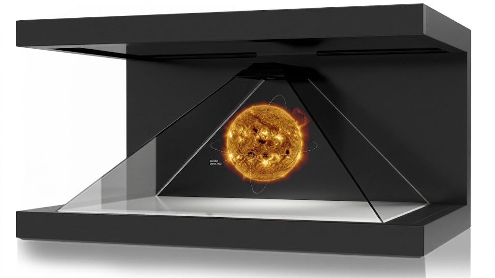
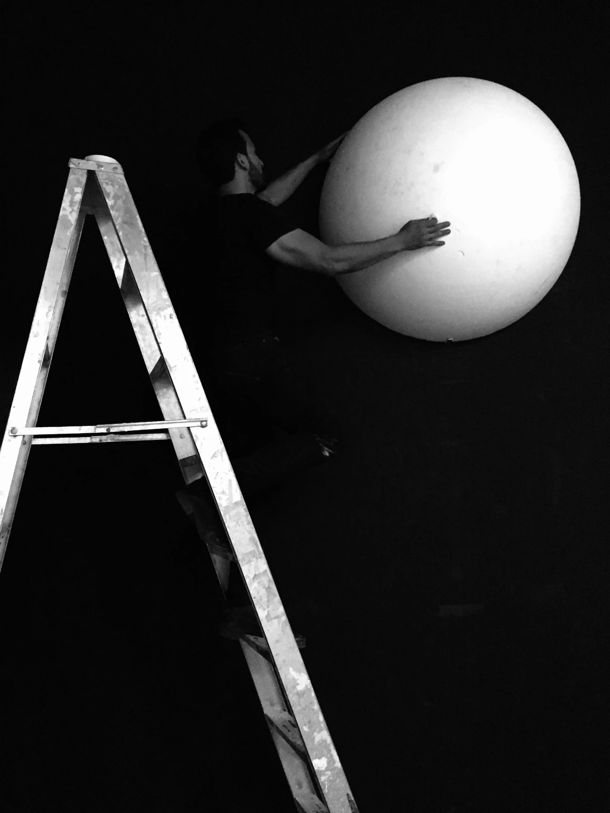
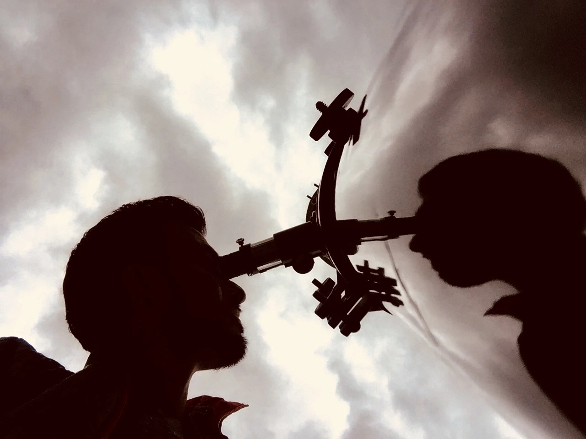
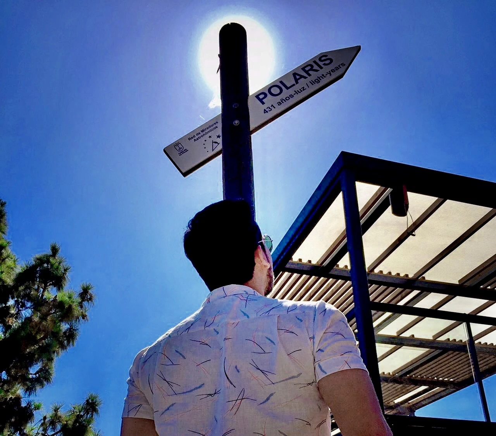
CONVERSACIONES
Ha participado como ponente en Grey Cube Project (2021 y 2022), el Museo de Arte de Pereira (2018 y 2020), la Universidad de los Andes (2017) y el Planetario de Bogotá (2016). La Cátedra Nacional de Arte y Ciencia forma parte de su actividad docente.
DISEÑO DE PIEZAS Y LOGOS
El diseño de piezas gráficas y logos es otra faceta de su trabajo de comunicación científica. Incluye las piezas de Jueves bajo las estrellas, que invitan a acercarse a la astronomía mediante conferencias y encuentros con sus protagonistas.
La imagen, la tipografía y la composición ayudan a dar visibilidad a las actividades y a reconocer a las comunidades que las hacen posibles.
Explorar los afiches de Jueves bajo las estrellas ↗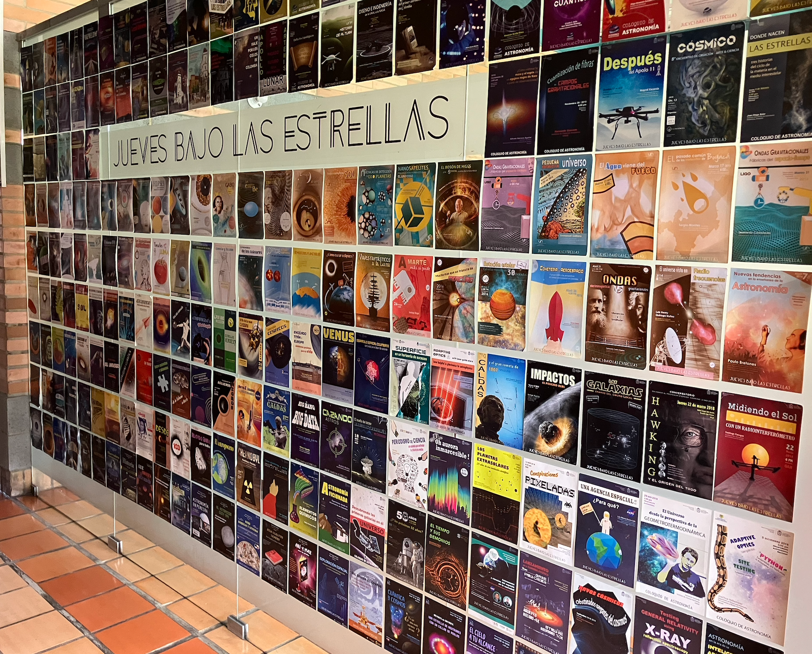
LOGOS E IDENTIDADES
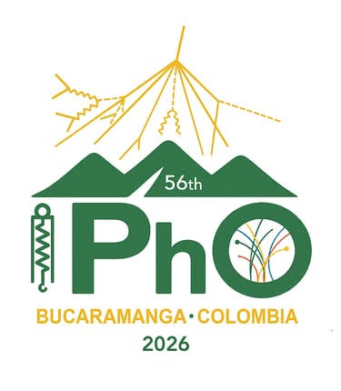
Olimpiada Internacional de Física
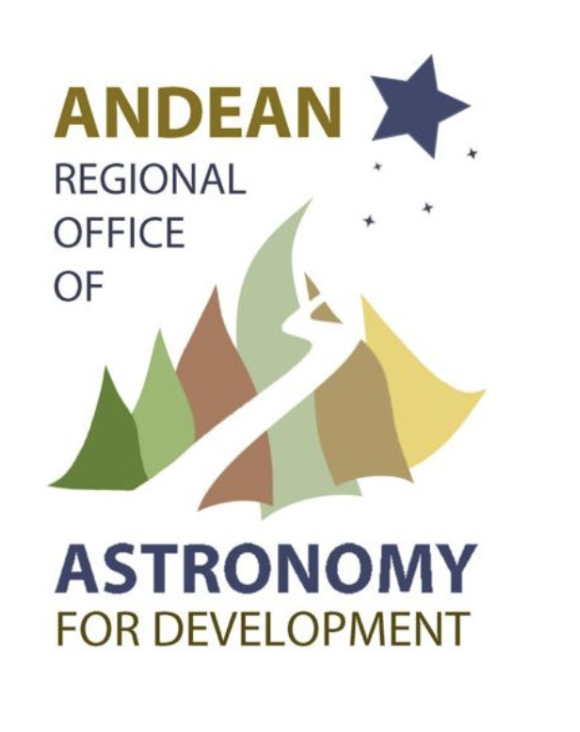
Oficina Regional Andina de Astronomía para el Desarrollo
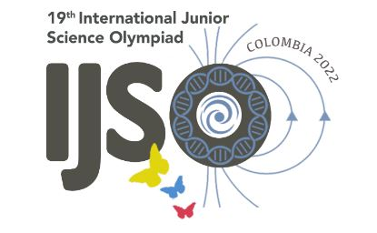
19.ª Olimpiada Internacional Juvenil de Ciencias
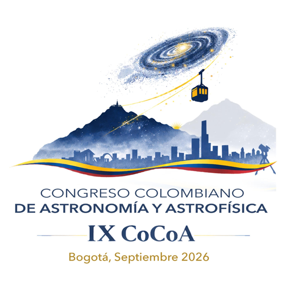
Congreso Colombiano de Astronomía y Astrofísica
ARCHIVO DE AFICHES · 2015–2026
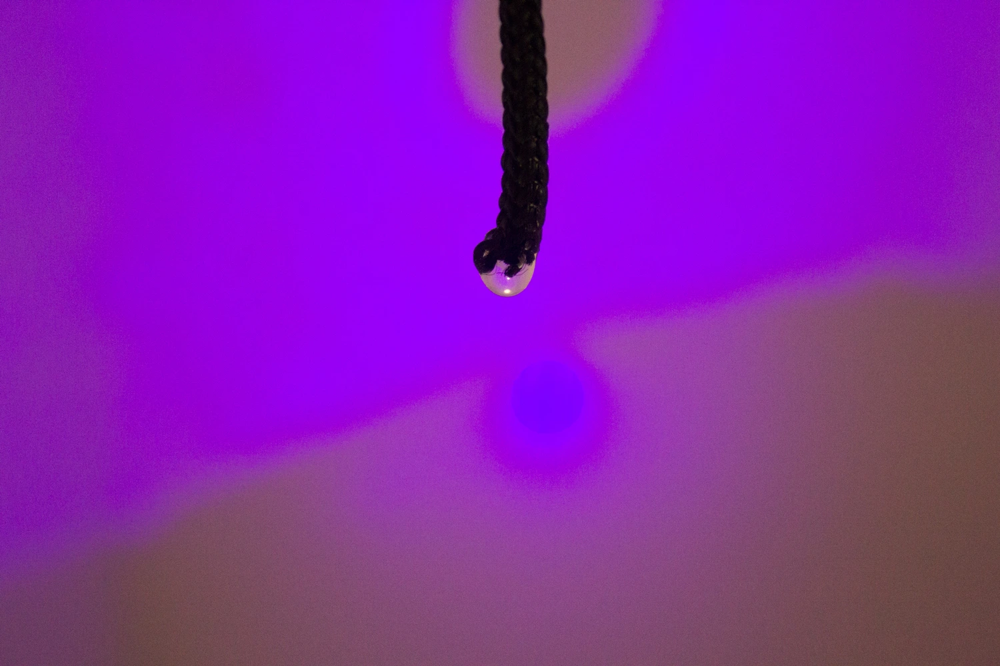
Encuentro entre investigación científica, percepción y creación artística. Una exposición para mirar otras escalas de la materia y ampliar las formas de acercarse al conocimiento.
Consultar ↗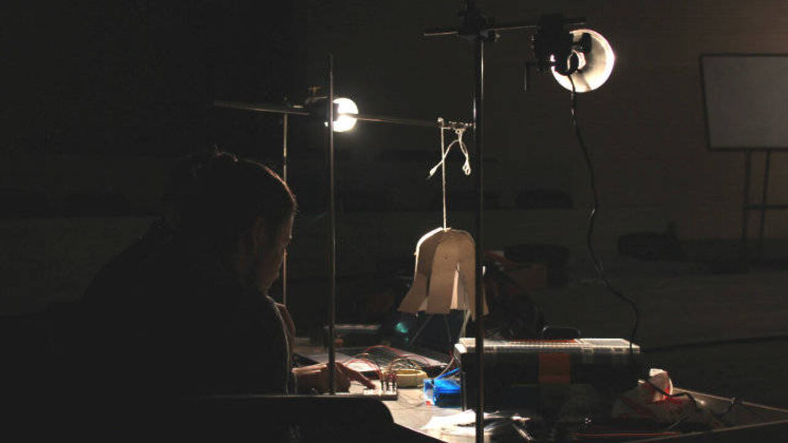
Apropiaciones de la física cuántica desde el arte y la ciencia. Participación en un diálogo entre lenguajes científicos y experiencias artísticas.
Consultar ↗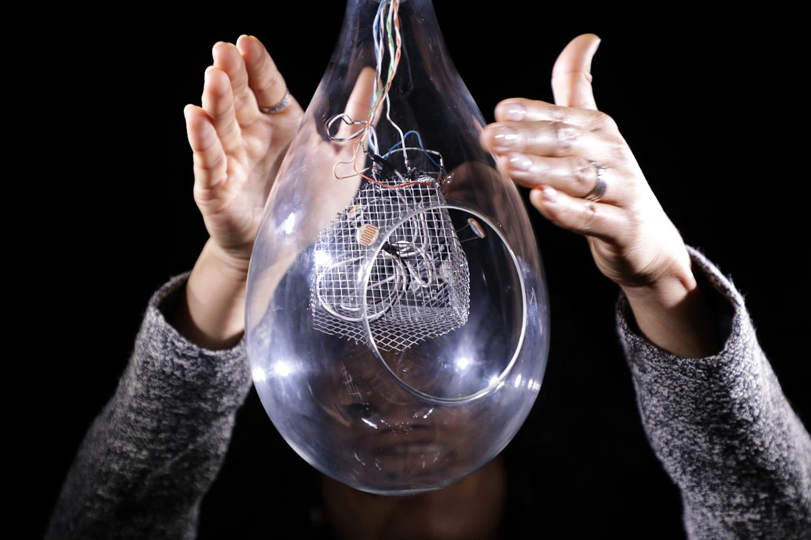
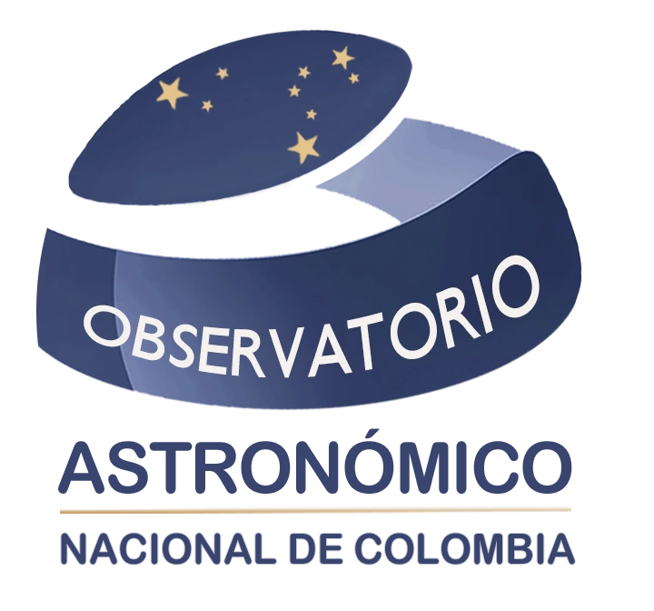
Su trabajo editorial incluye las portadas de eSPECTRA, revista de la que es creador y editor principal.
Ver las siete portadas de eSPECTRA ↗{kind=link}
{kind=link}
{kind=link}
{kind=link}